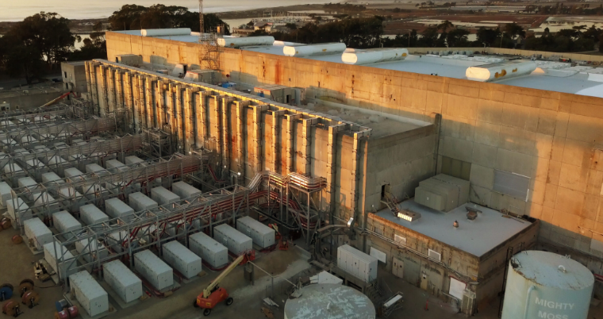
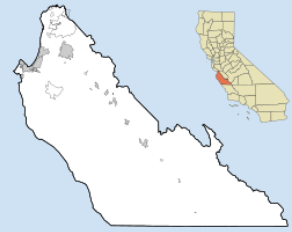
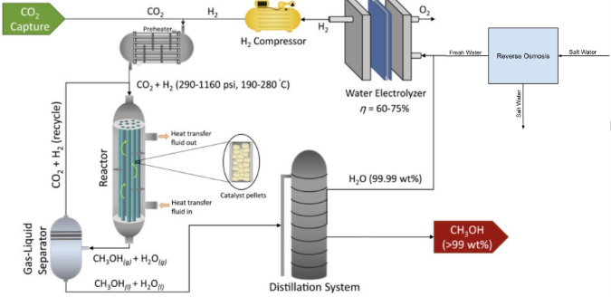
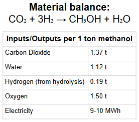
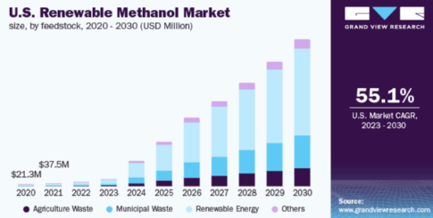
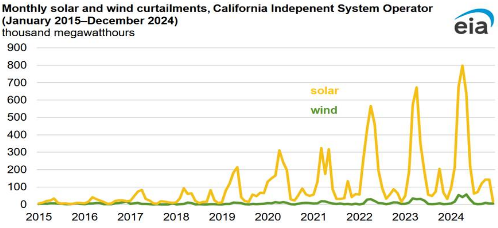

Green Methanol // December 3rd, 2025
Project Case:
Our team was selected as a winner in XSSV Challenge II and awarded $500,000 to carry out a twelve month feasibility study and prepare for a pilot scale demonstration. The work presented in this report addresses those objectives and is intended to show whether our concept can become a viable pathway to commercial deployment.
Executive Summary
California produces significant amounts of solar electricity that the grid cannot absorb during midday hours, particularly in spring and summer. When supply exceeds demand and storage is limited, grid operators curtail renewable output and accept that some clean energy will not be used. This curtailment represents both an environmental loss and an economic opportunity. The purpose of this project is to design a process that converts excess solar electricity, captured carbon dioxide, and seawater derived hydrogen into green methanol. Methanol is a widely traded chemical and liquid fuel with existing infrastructure, and it can serve as a chemical form of energy storage that embodies both renewable energy and recycled carbon.
The proposed facility is located at Moss Landing on Monterey Bay. Moss Landing already hosts one of the largest battery storage facilities in the world and has access to seawater and nearby industrial sources of carbon dioxide. Our process uses excess solar electricity to power electrolysis units that split purified seawater into hydrogen and oxygen. Carbon dioxide from industrial exhaust streams is captured, purified, and compressed. These two gases then react over a copper zinc alumina catalyst to produce methanol and water, which are separated and purified using standard chemical processing steps. Methanol is stored in tanks and can be transported using existing fuel infrastructure. This arrangement turns otherwise wasted solar electricity and waste carbon dioxide into a valuable, low carbon fuel.


Initial mass and energy balances indicate that producing 1 tonne of methanol requires approximately 1.37 tonnes of carbon dioxide and 0.19 tonnes of hydrogen, and that hydrogen production requires 9 to 10 megawatt hours of renewable electricity per tonne of methanol. Electrolysis produces about 1.5 tonnes of oxygen per tonne of methanol. At a proposed pilot capacity of roughly 32,000 tonnes of methanol per year, the plant would utilize on the order of 50,000 tonnes of carbon dioxide annually. Economic projections based on conservative methanol prices suggest that a facility at this scale could generate 16 to 21 million dollars in yearly revenue when both methanol and oxygen sales are considered. Environmental assessment shows that the process can achieve carbon neutral or carbon negative performance relative to conventional fossil based methanol and land intensive biofuels.
Overall, this feasibility study concludes that the process is technically feasible, economically promising, and environmentally beneficial. The project aligns closely with the mission of XSSV to transform excess solar energy and carbon dioxide into valuable chemical products. The main recommendation is to proceed to Phase Three and develop a pilot plant at Moss Landing.
Background and Rationale
Methanol is a fundamental building block for the modern chemical industry. It is used to produce formaldehyde, acetic acid, methyl tert butyl ether, dimethyl ether, and a range of solvents, plastics, and coatings. It can also be blended into fuels or upgraded to gasoline range hydrocarbons and jet fuel through downstream catalytic processes. Global methanol production already exceeds 110 million tonnes per year and continues to grow about 4-6% annually, making methanol a well understood and widely handled commodity.
Conventional methanol plants nearly always start from fossil resources. Natural gas is reformed to produce synthesis gas, which is a mixture of carbon monoxide, carbon dioxide, and hydrogen. This gas is then converted to methanol over a catalyst. Coal based routes are also used in some regions. These methods are efficient and cost effective but emit substantial carbon dioxide. At the same time, some alternative fuels such as corn ethanol have been questioned in recent life cycle studies that suggest that their greenhouse gas emissions may be similar to or higher than gasoline when land use change and agricultural inputs are fully considered. Although industry groups disagree with some of these assessments, the debate highlights the need for fuel pathways that do not require large amounts of land or freshwater and that rely directly on renewable electricity.
Producing methanol from captured carbon dioxide and water derived hydrogen offers such a pathway. Electrolysis powered by renewable electricity splits water into hydrogen and oxygen. Hydrogen can then react with carbon dioxide to form methanol and water. If the electricity is renewable and the carbon dioxide is captured from industrial sources or the atmosphere, the resulting methanol can have very low net greenhouse gas emissions.
California offers a particularly favorable context for implementation. The California Independent System Operator has reported growing levels of solar curtailment as installed capacity has increased. It has also been described how large battery storage projects at Moss Landing are being built to manage this surplus, but batteries alone will not capture all of the opportunities. Chemical conversion of electricity into fuels and feedstocks can complement batteries by providing longer term storage. Locating a methanol plant at Moss Landing connects excess solar generation from the grid with industrial carbon dioxide sources and marine transport routes in a way that fits the state’s broader decarbonization strategy
Technical Design
The core reaction for the process is the hydrogenation of carbon dioxide to methanol and water. It can be written as:
CO2 + 3 H2 → CH3OH + H2O
This reaction proceeds in the presence of a heterogeneous catalyst, typically based on copper, zinc oxide, and alumina. The reaction is exothermic and equilibrium limited, so temperature, pressure, and recycle ratio must be chosen carefully to maximize methanol yield while maintaining catalyst stability.


In the proposed design, the process begins with seawater intake from Monterey Bay. Seawater passes through pretreatment steps that remove suspended solids, biological matter, and most dissolved salts. A combination of filtration and membrane processes produces water of sufficient purity for the electrolysis system. This pretreated water is then fed to proton exchange membrane electrolyzers that use electricity purchased from the grid during hours of excess solar generation. Inside the electrolyzers, water is split into hydrogen and oxygen. Hydrogen leaves the stack at high purity and is collected in a storage and buffer system. Oxygen is dried, compressed, and made available for sale to local industrial users such as wastewater treatment plants, hospitals, or manufacturing facilities.
In parallel with the water and hydrogen section, carbon dioxide is captured from nearby industrial exhaust streams. Flue gas is cooled and treated to remove sulfur oxides, nitrogen oxides, and particulates. Carbon dioxide is then separated using absorption or membrane technology, dried, and compressed to the pressure required for synthesis. For this feasibility study, it is assumed that sufficient carbon dioxide can be obtained from existing emitters near Moss Landing so that additional direct air capture is not required in the near term.
Hydrogen and carbon dioxide streams are blended in the correct stoichiometric ratio and passed through heat exchangers that bring the mixture to a reactor inlet temperature of around two hundred fifty degrees Celsius. The gas is then introduced into a fixed bed reactor that operates at approximately sixty bar. The reactor catalyst bed promotes the conversion of carbon dioxide and hydrogen to methanol and water. Because the reaction releases heat, cooling surfaces and external heat removal are necessary to prevent overheating and to maintain catalyst performance.
The reactor effluent contains methanol, water, unreacted hydrogen, unreacted carbon dioxide, and trace inerts. The hot effluent passes through a series of heat exchangers where the sensible heat and reaction heat are recovered and used for feed preheating and for the distillation system. After cooling, the stream enters a condenser where methanol and water condense into a liquid while most of the unreacted gases remain in a vapor phase. The vapor is separated and recycled to the reactor inlet, improving overall conversion and efficiency.
The crude liquid mixture is sent to a distillation column designed to produce fuel and chemical grade methanol. Methanol is drawn from the top of the column at a purity above ninety nine percent. The bottom stream is rich in water and can be recycled as processed water or used as feed for further purification. The combination of reaction, heat recovery, separation, and recycle closes the loop and maximizes resource use.
Initial mass and energy balances indicate that producing 1 tonne of methanol requires approximately 1.37 tonnes of carbon dioxide and 0.19 tonnes of hydrogen, and that hydrogen production requires 9 to 10 megawatt hours of renewable electricity per tonne of methanol. Electrolysis produces about 1.5 tonnes of oxygen per tonne of methanol.. All major unit operations, including electrolyzers, carbon dioxide capture systems, methanol reactors, and distillation columns, are commercially available. This means that the technical risk lies mostly in integration and operation rather than in developing new technology.
Materials Selection and Scale
The process relies on four main material inputs: carbon dioxide, hydrogen, water, and electricity. Carbon dioxide must be supplied at a purity that avoids harmful levels of sulfur, chlorine, or other catalyst poisons. Industrial exhaust streams near Moss Landing can be treated to meet this requirement. Hydrogen comes from proton exchange membrane electrolyzers that are well suited to flexible operation and can respond to the variable availability of solar electricity. Water is drawn from the ocean, pretreated, and then reused within the process. Electricity is assumed to be sourced from solar plants that would otherwise curtail output, which keeps the effective energy cost lower and satisfies the mission of XSSV.
Product specifications focus on methanol purity and stability. A purity above ninety nine percent is sufficient for many fuel and chemical applications, while a purity approaching ninety nine point eight five percent is standard in the global methanol market. The distillation system is designed to meet these specifications. Water and oxygen are the main byproducts. Water is largely recycled, which reduces net water use, and oxygen can be sold as a secondary product. Waste streams are limited to brine from seawater pretreatment and minor purge flows from the reactor loop.
The pilot plant capacity is chosen as approximately thirty two thousand tonnes of methanol per year. At this scale, the facility would consume roughly fifty thousand tonnes of carbon dioxide per year and require several hundred thousand megawatt hours of renewable electricity. This is significant enough to test integration with the California grid and to have measurable environmental benefits, yet small enough to be manageable for a first of a kind facility. Curtailment data for solar power indicate that there are significant hours each year in which this level of energy could be drawn without affecting grid reliability. In addition, the presence of large battery systems at Moss Landing allows for smoothing of power supply to the electrolyzers and the reactor.
Economic Analysis
The economic assessment of the project focuses on revenue from methanol and oxygen, and costs associated with electricity, carbon dioxide capture, equipment, and operations. The global methanol market is valued at on the order of 40 billion dollars. Methanol Institute data and market analyses show that prices typically fall in the range of $450 to $650 per tonne, with premium pricing for low carbon and renewable methanol. Demand is projected to grow as methanol is adopted for marine fuels and as a precursor to sustainable aviation fuel.
For this feasibility study, a base case methanol price of $500 per tonne is assumed. At 32,000 tonnes per year, that yields 16 million dollars in annual methanol revenue. Oxygen produced as a byproduct from electrolysis can be sold into industrial or medical markets, adding an estimated half million dollars per year. Under somewhat higher price scenarios that reflect premiums for green methanol, revenue could approach or exceed 20 million dollars per year.
For the purposes of this theoretical pilot analysis we assume California supplies curtailed solar electricity to the facility at no charge. With electricity cost set to zero, the project’s raw-material costs are limited to carbon dioxide capture and handling plus seawater pretreatment for electrolysis feed. At a pilot production rate of 32,000 tonnes methanol per year, and using conservative industry assumptions (1.37 t CO₂/t MeOH; CO₂ capture cost $30/t; 10% surcharge for compression/handling; seawater pretreatment and purified water cost $0.50/m³), the annual raw-material cost is $1,474,080. Product sales are estimated at $16,500,000/yr (methanol sales $16,000,000 plus oxygen coproduct sales $500,000). Subtracting raw-material costs yields a gross Total Annual Revenue of $15,025,920 per year. This figure demonstrates the strong sensitivity of project economics to electricity cost and the economic upside of access to free curtailed solar power.
A complete discounted cash flow analysis would be required for a final investment decision, but the combination of strong revenue potential, access to low cost surplus electricity, and growing green methanol demand suggests that the project can be economically viable.


Market and Business Strategy
The market for methanol is large and diverse, and the specific segment of interest for this project is renewable or green methanol. Shipping companies are ordering methanol capable vessels in order to comply with International Maritime Organization regulations on carbon intensity. Aviation companies are exploring methanol based sustainable aviation fuel routes, and industrial customers are seeking low carbon feedstocks for plastics and chemicals. Green methanol is therefore positioned as a key enabler of decarbonization across multiple sectors.
Competitors in the renewable methanol space include projects that produce methanol from renewable electricity and captured carbon dioxide in Europe, North America, and Asia, as well as producers of bio methanol from waste biomass. Despite these developments, total renewable methanol supply remains far below potential future demand, especially if large portions of the shipping and aviation sectors move in this direction. A project in California can therefore find buyers for its product, particularly if it can demonstrate reliable production and clear environmental benefits.
Moss Landing provides a strong base for a business strategy. It features interconnections to the California grid, large scale battery storage, access to seawater, and proximity to industrial emitters that can provide carbon dioxide. The location is within reach of West Coast ports, which are likely early hubs for low carbon marine fuels. The business strategy for the pilot phase will involve partnering with methanol distributors, fuel suppliers, or shipping companies, as well as securing agreements with carbon dioxide providers and local users of oxygen.
Environmental and Sustainability Assessment
From an environmental perspective, the main advantage of the proposed process is its impact on greenhouse gas emissions. Conventional methanol production emits about 1.4 tonnes of carbon dioxide per tonne of methanol produced. In contrast, the process studied here consumes approximately 1.37 tonnes of carbon dioxide per tonne of methanol and avoids the use of fossil fuels for hydrogen production. If the electricity is renewable, the net emissions for green methanol are much lower than for conventional methanol and can be near zero. When green methanol replaces fossil methanol or fossil fuels, it leads to meaningful reductions in life cycle emissions.
This performance compares favorably with some biofuel pathways that rely on large areas of cropland and substantial use of fertilizers and water. Studies of corn ethanol suggest that when land use change and full agricultural inputs are considered, corn ethanol may not deliver the expected emission savings and in some analyses may be worse than gasoline. While these results are contested, they highlight the value of fuel pathways that do not depend heavily on land or freshwater. Green methanol from carbon dioxide and seawater derived hydrogen does not require cropland and can make use of seawater rather than competing with municipal or agricultural water demands.
Water management in the plant is also favorable. The primary water input is seawater, which is abundant along the California coast. Process water generated in the methanol synthesis reaction is recycled within the system. Wastewater streams are limited and can be treated before discharge. Methanol itself is biodegradable and burns more cleanly than many fossil fuels, producing fewer particulates and lower sulfur emissions, which can help improve local air quality when used as a fuel.
Taken together, these characteristics show that the process supports a circular carbon economy. Carbon dioxide from industrial sources is captured and turned into a valuable product, rather than being released into the atmosphere. When the methanol is later burned, carbon dioxide is released again, but the net effect is a cycle rather than a one way path from fossil reserves to the atmosphere.
Safety and Risk Analysis
Safety is an essential component of the feasibility design. Methanol is flammable and toxic, and its safety data sheet emphasizes risks associated with inhalation, ingestion, and skin contact. Proper design includes containment, leak detection, ventilation, and fire protection systems. Tanks and equipment must be designed to minimize the chance of leaks and to withstand exposure to methanol. Operators require training in handling spills, avoiding vapor exposure, and responding to fires.
Hydrogen introduces additional hazards, such as low ignition energy and a wide flammability range in air. Detection systems, adequate ventilation, and strict control of ignition sources are necessary. Because hydrogen is lighter than air, attention must be paid to potential accumulation under roofs or in enclosed structures. Oxygen byproduct must also be handled carefully, as oxygen enriched atmospheres greatly increase fire risk.
Carbon dioxide is not flammable but can cause asphyxiation if it displaces oxygen in confined spaces. Monitoring and ventilation strategies must be in place wherever carbon dioxide is stored or may accumulate. High pressure equipment such as reactors, piping, and gas storage systems must be designed according to recognized pressure vessel codes, with appropriate safety valves, instrumentation, and inspection intervals.
The presence of existing battery infrastructure at Moss Landing adds another context to safety planning. Incidents at large battery facilities have shown that thermal runaway and fires can occur if systems are not properly managed. Although the methanol plant would be a separate installation, emergency response planning and coordination with site operators and local authorities will be essential.
Recommendations and Next Steps
Based on the technical, economic, environmental, and safety analyses presented in this report, the proposed green methanol project satisfies the key criteria of the XSSV Challenge. It addresses the challenge of excess solar energy by using curtailed electricity to produce hydrogen. It captures carbon dioxide from industrial sources and recycles it into a valuable fuel and chemical product. It is built on mature technologies that have been proven in other contexts. It appears economically promising when assessed with conservative price and cost assumptions. It offers meaningful greenhouse gas reductions and avoids some of the land and water concerns associated with certain biofuels.
Therefore, the project is considered technically feasible and economically viable, and it is recommended that XSSV invest in Phase Three pilot development. A pilot plant with a capacity of roughly 1,000 tonnes per year at Moss Landing is an appropriate next step. Such a plant would demonstrate real world performance of the integrated system under variable solar conditions, provide detailed data on catalyst performance and lifetime, confirm energy use and production costs, and validate safety and operating procedures.
The current $500,000 award should be used to complete detailed process simulations, refine equipment specifications, update cost estimates with vendor quotes, pursue preliminary permitting and site studies, and develop partnerships with carbon dioxide suppliers and methanol offtakers. These activities will reduce uncertainty and prepare a strong foundation for a request for five to ten million dollars in Phase Three funding to build and operate the pilot system. Successful completion of the pilot would position the project for future commercial scale deployment and make a meaningful contribution to the development of sustainable chemical production and climate solutions.
The following are links to assignments throughout this entire project. Keep in mind not everything is covered in this portfolio section and the the links are here for reference.
Poster Template